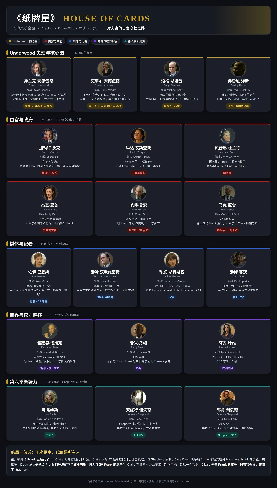

最新一季 S6
最终季第六季只有 8 集，是克莱尔一个人的牌局：Frank 已死（官方说法是肝衰竭），她以第 47 任总统独自执政，一边应付 Shepherd 家族的围猎，一边提防道格；终局道格承认是他换了 Frank 的肝病药、亲手“了结”了主人，克莱尔在椭圆形办公室用拆信刀刺死他，怀着孩子对镜头说出“My turn”。
原著《纸牌屋》
弗兰克·安德伍德被总统食言的那一夜起，一张纸牌搭成的权力大厦开始往上垒——这是 26 个关键人物的关系全图：谁是同盟，谁是棋子，谁最后被推下了楼。点开任意卡片看身份、关系与结局。
第六季只有 8 集，是克莱尔一个人的牌局：Frank 已死（官方说法是肝衰竭），她以第 47 任总统独自执政，一边应付 Shepherd 家族的围猎，一边提防道格；终局道格承认是他换了 Frank 的肝病药、亲手“了结”了主人，克莱尔在椭圆形办公室用拆信刀刺死他，怀着孩子对镜头说出“My turn”。
原著《纸牌屋》
安德伍德核心（从党鞭办公室一路打进椭圆形办公室） ├─ 弗兰克·安德伍德 …… 众议院党鞭 → 副总统 → 第 46 任总统 ├─ 克莱尔·安德伍德 …… 妻子 / 政治合伙人 → 第一夫人 → 副总统 → 第 47 任总统 ├─ 道格·斯坦普 ………… 幕僚长，弗兰克的影子与打手 ├─ 爱德华·米查姆 ……… 特勤保镖，与夫妻二人都越了界 ├─ 塞斯·格雷森 ………… 新闻秘书，两面下注的投机者 └─ 莉安·哈维 …………… 竞选经理，用数据打选战的人 沃克政府与政坛（弗兰克要扳倒、拉拢或架空的人） ├─ 加勒特·沃克 ………… 第 45 任总统，被弗兰克一步步逼到辞职 ├─ 琳达·瓦斯奎兹 ……… 白宫幕僚长，沃克最信任的人 ├─ 雷蒙德·塔斯克 ……… 亿万富翁，沃克的幕后金主与密友 ├─ 凯瑟琳·杜兰特 ……… 国务卿，弗兰克亲手扶上位，又亲手推出去 ├─ 杰姬·夏普 …………… 弗兰克指定的党鞭接班人，后倒戈 └─ 希瑟·邓巴 …………… 联邦讼务次长出身，党内初选挑战弗兰克 新闻线（离真相最近、也最危险的一群人） ├─ 佐伊·巴恩斯 ………… 靠弗兰克喂料上位的年轻记者 ├─ 汤姆·哈默施密特 …… 佐伊的老编辑，后期接手追查 ├─ 贾妮·斯科斯基 ……… 资深政治记者，早早嗅到不对 └─ 卢卡斯·古德温 ……… 爱佐伊、也为她复仇的编辑 棋子与旧账（被用过、被欠过、回来索命的） ├─ 彼得·鲁索 …………… 被弗兰克捧起又毁掉的议员 ├─ 雷米·丹顿 …………… 说客，在弗兰克与塔斯克之间跳槽 ├─ 弗雷迪·海斯 ………… 烤 ribs 店老板，弗兰克少数真心待的人 └─ 蕾切尔·波斯纳 ……… 被用来设局鲁索的女孩，道格的心魔 后期入局者（选战、新对手与第六季的新牌局） ├─ 威尔·康威 …………… 共和党总统候选人，弗兰克的镜像对手 ├─ 艾丹·麦卡伦 ………… 数据天才，莉安手里的监控武器 ├─ 汤姆·耶茨 …………… 为弗兰克写传记的作家，爬上了克莱尔的床 ├─ 马克·亚瑟 …………… 康威的军师，转投克莱尔后官至副总统 ├─ 简·戴维斯 …………… 商务部高官，笑面背后的操盘手 └─ 安妮特·谢泼德 ……… 克莱尔的发小，谢泼德财团的掌门
第六季只有 8 集，是克莱尔一个人的牌局：弗兰克已死（官方说法是肝衰竭），她一边应付谢泼德姐弟的围猎与暗杀威胁，一边提防道格——道格始终怀疑弗兰克之死与她有关，并以泄露日记相要挟。
终局落在椭圆形办公室：道格当面承认，正是他换掉了弗兰克的肝病药物、亲手「了结」了自己的主人，因为弗兰克正打算杀克莱尔，而道格不能让弗兰克的遗产毁在自己手里。争执中，克莱尔用拆信刀刺中道格，看着他在自己怀里断气——如同当年弗兰克看着鲁索的座椅。怀孕的克莱尔独自站在权力顶峰，最后一次打破第四面墙，对镜头说：「不再有痛苦了。」全剧终。弗兰克生前录下的日记、以及他到底算不算被谋杀，剧集留白未解。
